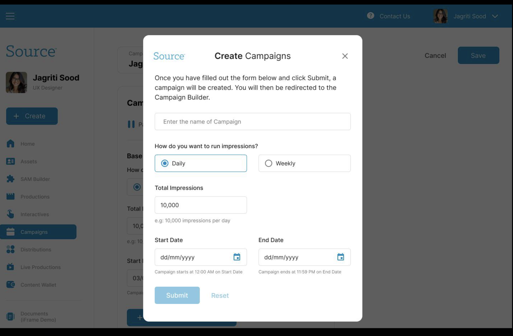
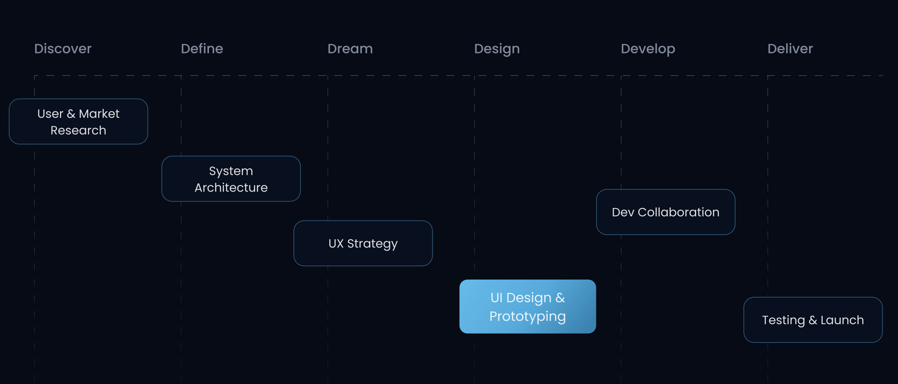
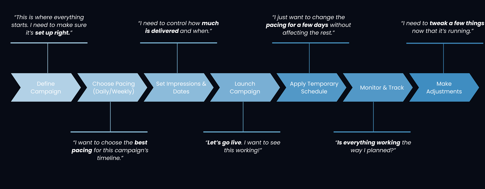
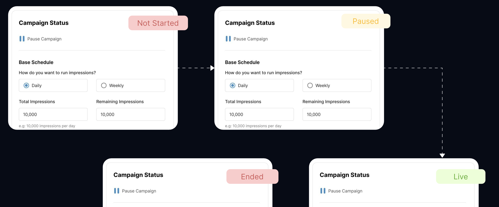

Platform Preview
A showcase of the Campaigns platform interface across different devices and key features

Campaign Dashboard
Centralized hub showing all active campaigns with real-time pacing, status indicators, and quick action controls for campaign management.
Real-time Pacing
Status Indicators
Quick Actions

Scheduling Interface
Intuitive timeline view for setting up campaign schedules with flexible pacing options and temporary adjustments.

Mobile Management
Full campaign management capabilities optimized for mobile devices with touch-friendly controls.

